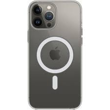
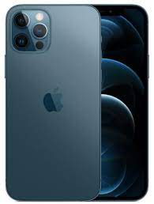

iphone 13 pro
Az egyedülálló iPhone.
Indulóár: 424 990 Ft
6,7 vagy 6,1 hüvelykes,
teljes előlapot kitöltő OLED‑kijelző1 ProMotion technológiával
Pro kamerarendszer
Ultraszéles látószögű, széles látószögű és telefotókamera
A15 Bionic chip
A leggyorsabb okostelefonchip
Szupergyors 5G2
Akár 28 óra
videólejátszás3
Kompatibilis a MagSafe kiegészítőkkeliphone 13

Erőmű a kezedben.
Indulóár: 294 990 Ft
6,1 vagy 5,4 hüvelykes,
teljes előlapot kitöltő OLED‑kijelző1
Fejlett duplakamera-rendszer
Széles látószögű és ultraszéles látószögű kamera
A15 Bionic chip
Gyorsabb a konkurenciánál
Szupergyors 5G2
Akár 19 óra
videólejátszás3
Kompatibilis a MagSafe kiegészítőkkel
iphone 12pro
Továbbra is szenzációs.
Indulóár: 249 990 Ft
6,1 vagy 5,4 hüvelykes,
teljes előlapot kitöltő OLED‑kijelző1
Duplakamera-rendszer
Ultraszéles látószögű és széles látószögű kamera
A14 Bionic chip
Szupergyors 5G2
Akár 17 óra
videólejátszás3
Kompatibilis a MagSafe kiegészítőkkel
iphone se

Nagyon bejön.Nagyon megéri.
Indulóár: 174 990 Ft
4,7 hüvelykes
LCD-kijelző
Egykamerás rendszer
Széles látószögű kamera
A13 Bionic chip
4G/LTE mobilhálózat2
Akár 13 óra
videólejátszás3